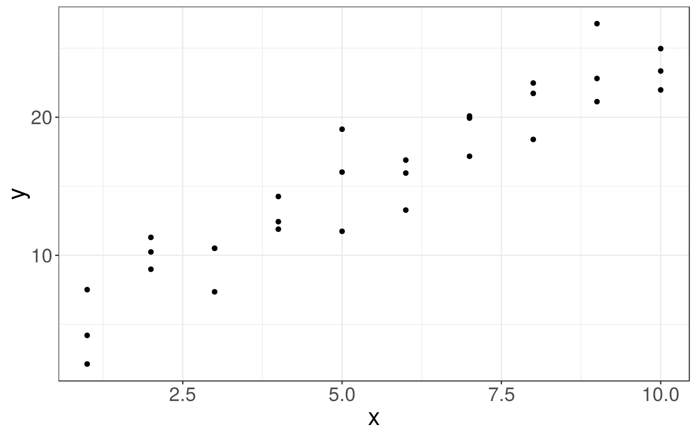
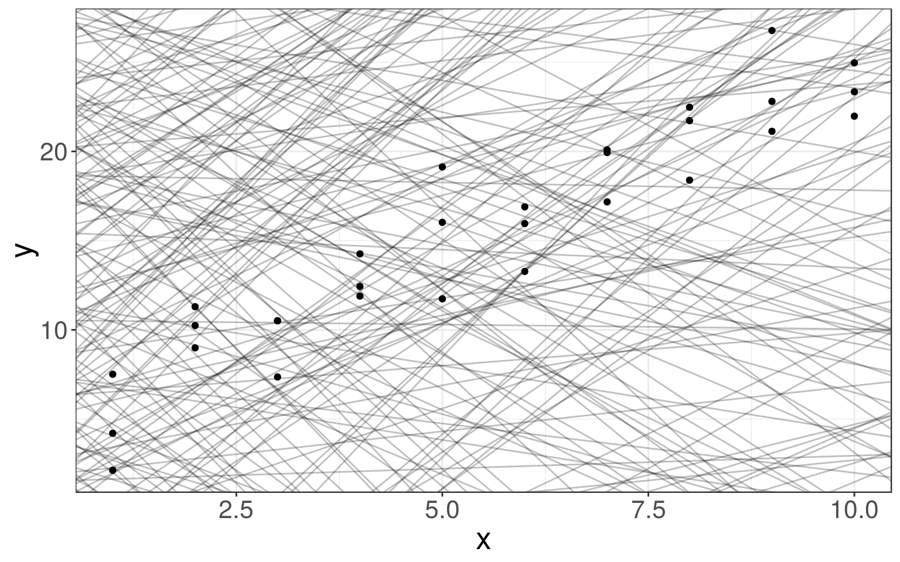
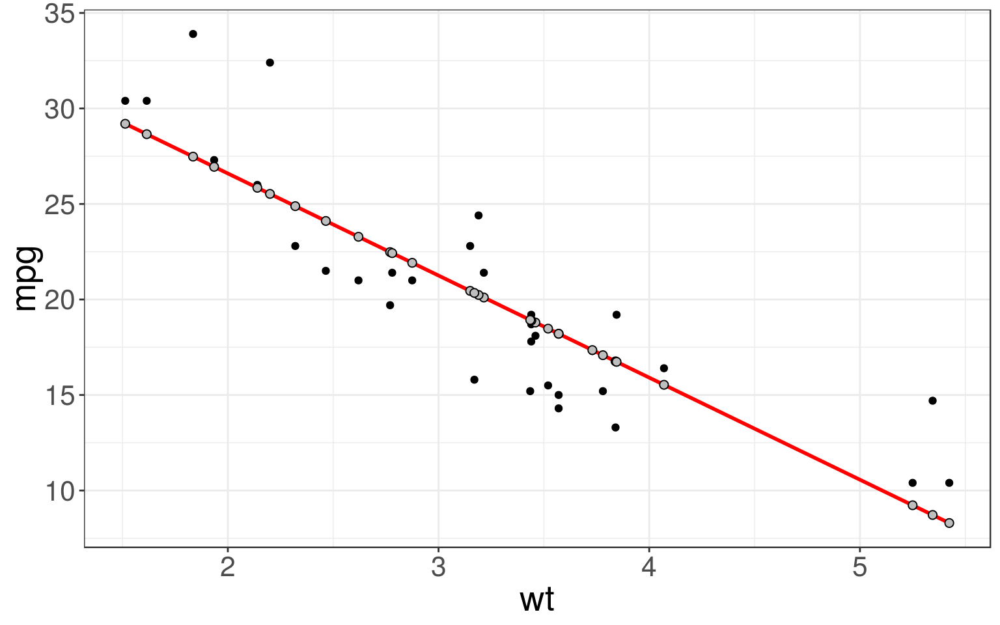
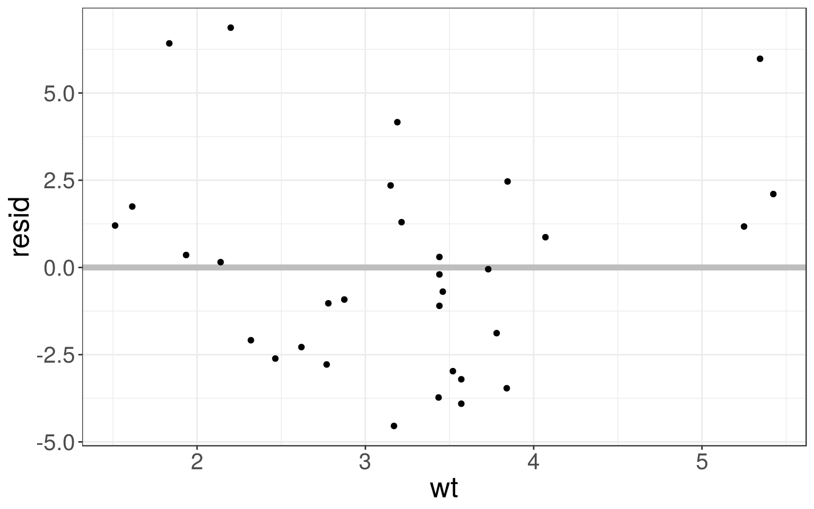
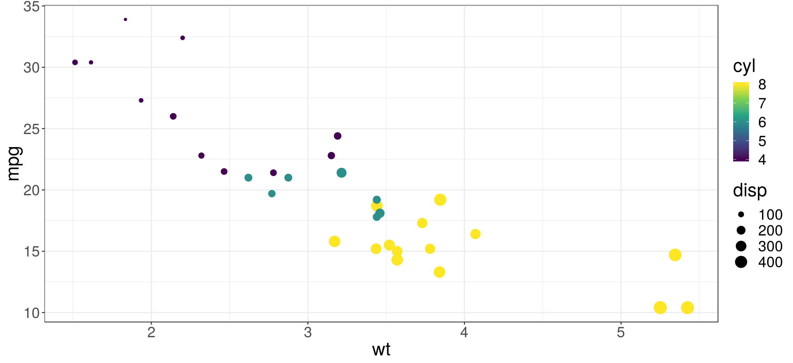
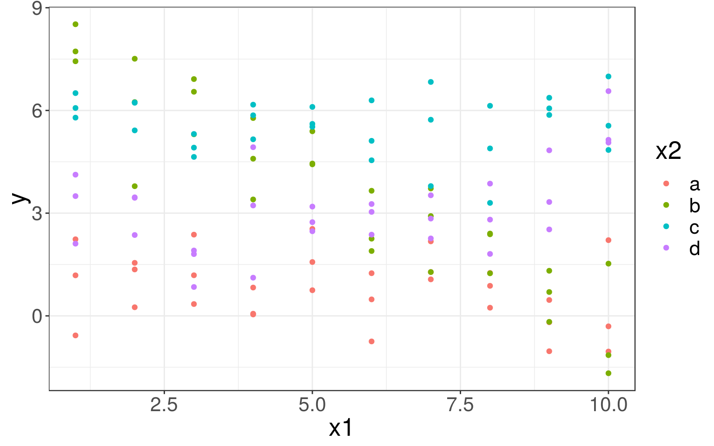
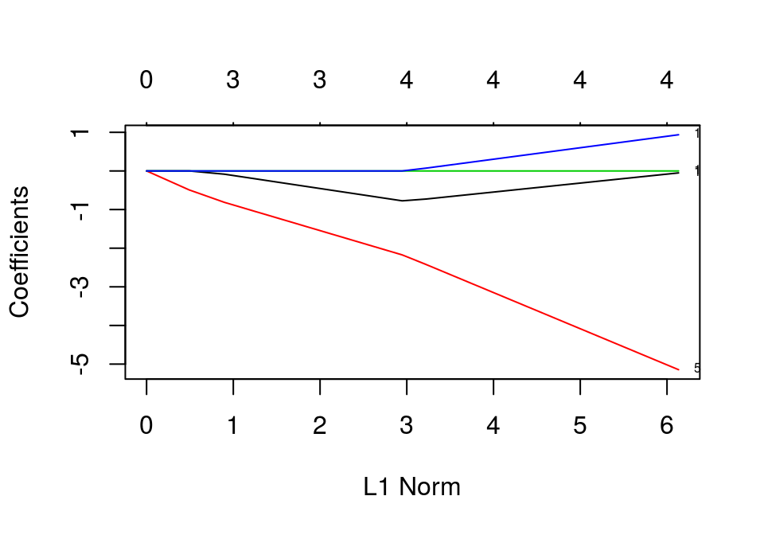

Lecture 6: Data modeling and linear regression
CME/STATS 195
Lan Huong Nguyen
October 16, 2018
Contents
Data Modeling
Linear Regression
Lasso Regression

Data Modeling
Introduction to models
“All models are wrong, but some are useful. Now it would be very remarkable if any system existing in the real world could be exactly represented by any simple model. However, cunningly chosen parsimonious models often do provide remarkably useful approximations (…). For such a model there is no need to ask the question”Is the model true?“. If”truth" is to be the “whole truth” the answer must be “No”. The only question of interest is “Is the model illuminating and useful?” – George E.P. Box, 1976
The goal of a model is to provide a simple low-dimensional summary of a dataset.
Models can be used to partition data into patterns of interest and residuals (other sources of variation and random noise).
Hypothesis generation vs. hypothesis confirmation
Usually models are used for inference or confirmation of a pre-specified hypothesis.
Doing inference correctly is hard. The key idea you must understand is that: Each observation can either be used for exploration or confirmation, NOT both.
Observation can be used many times for exploration, but only once for confirmation.
There is nothing wrong with exploration, but you should never sell an exploratory analysis as a confirmatory analysis because it is fundamentally misleading.
Confirmatory analysis
If you plan to do confirmatory analysis at some point after EDA, one approach is to split your data into three pieces before you begin the analysis:
Training set – the bulk (e.g. 60%) of the dataset which can be used to do anything: visualising, fitting multiple models.
Validation set – a smaller set (e.g. 20%) used for manually comparing models and visualizations.
Test set – a set (e.g. 20%) held back used only ONCE to test and asses your final model.
Confirmatory analysis
Partitioning the dataset allows you to explore the training data, generate a number of candidate hypotheses and models.
You can select a final model based on its performace on the validation set.
Finally, when you are confident with the chosen model you can check how good it is using the test data.
Note that even when doing confirmatory modeling, you will still need to do EDA. If you don’t do any EDA you might remain blind to some quality problems with your data.
Model Basics
There are two parts to data modeling:
- defining a family of models: deciding on a set of models that can express a type of pattern you want to capture, e.g. a straight line, or a quadratic curve.
- fitting a model: finding a model within the family that the closest to your data.
A fitted model is just the best model from a chosen family of models, i.e. the “best” according to some set criteria.
This does not necessarily imply that the model is a good and certainly does NOT imply that the model is true.
The modelr package
The
modelrpackage, provides a few useful functions that are wrappers around base R’s modeling functions.These functions facilitate the data analysis process as they are nicely integrated with the
tidyversepipeline.modelris not automatically loaded when you load intidyversepackage, you need to do it separately:
library(modelr)A toy dataset
We will work with a simulated dataset sim1 from modelr:
sim1## # A tibble: 30 x 2
## x y
## <int> <dbl>
## 1 1 4.20
## 2 1 7.51
## 3 1 2.13
## 4 2 8.99
## 5 2 10.2
## 6 2 11.3
## 7 3 7.36
## 8 3 10.5
## 9 3 10.5
## 10 4 12.4
## # ... with 20 more rowsggplot(sim1, aes(x, y)) + geom_point()
Defining a family of models
The relationship between \(x\) and \(y\) for the points in sim1 look linear. So, will look for models which belong to a family of models of the following form:
\[y= \beta_0 + \beta_1 \cdot x\]
The models that can be expressed by the above formula, can adequately capture a linear trend.
We generate a few examples of the models from this family on the right.
models <- tibble(
b0 = runif(250, -20, 40),
b1 = runif(250, -5, 5))
ggplot(sim1, aes(x, y)) +
geom_abline(
data = models,
aes(intercept = b0, slope = b1),
alpha = 1/4) +
geom_point() 
Fitting a model
From all the lines in the linear family of models, we need to find the best one, i.e. the one that is the closest to the data.
This means that we need to find parameters \(\hat a_0\) and \(\hat a_1\) that identify such a fitted line.
The closest to the data can be defined as the one with the minimum distance to the data points in the \(y\) direction (the minimum residuals):
\[\begin{align*} \|\hat e\|^2_2 &= \|\vec y - \hat y\|_2^2\\ &= \|\vec y - (\hat \beta_0 + \hat \beta_1 x)\|_2^2\\ &= \sum_{i = 1}^n (y_i - (\hat \beta_0 + \hat \beta_1 x_i))^2 \end{align*}\]
Linear Regression
Linear Regression
- Regression is a supervised learning method, whose goal is inferring the relationship between input data, \(x\), and a continuous response variable, \(y\).
- Linear regression is a type of regression where \(y\) is modeled as a linear function of \(x\).
- Simple linear regression predicts the output \(y\) from a single predictor \(x\). \[y = \beta_0 + \beta_1 x + \epsilon\]
- Multiple linear regression assumes \(y\) relies on many covariates: \[y = \beta_0 + \beta_1 x_1 + \beta_2 x_2 + \dots + \beta_p x_p + \epsilon = \vec \beta \vec x + \epsilon\]
- here \(\epsilon\) denotes a random noise term with zero mean.
Objective function
Linear regression seeks a solution \(\hat y = \hat \beta \cdot \vec x\) that minimizes the difference between the true outcome \(y\) and the prediction \(\hat y\), in terms of the residual sum of squares (RSS).
\[ arg \min\limits_{\hat \beta} \sum_i \left(y_i - \boldsymbol{\hat \beta}^T \boldsymbol{x}_i\right)^2 \]
Simple Linear Regression
Predict the mileage per gallon using the weight of the car.
In R the linear models can be fit with a
lm()function.
mtcars_fit <- lm(mpg ~ wt, mtcars)
# The fitted coefficients beta are:
coef(mtcars_fit)## (Intercept) wt
## 37.285126 -5.344472We can check the details on the fitted model by calling:
summary(mtcars_fit)##
## Call:
## lm(formula = mpg ~ wt, data = mtcars)
##
## Residuals:
## Min 1Q Median 3Q Max
## -4.5432 -2.3647 -0.1252 1.4096 6.8727
##
## Coefficients:
## Estimate Std. Error t value Pr(>|t|)
## (Intercept) 37.2851 1.8776 19.858 < 2e-16 ***
## wt -5.3445 0.5591 -9.559 1.29e-10 ***
## ---
## Signif. codes: 0 '***' 0.001 '**' 0.01 '*' 0.05 '.' 0.1 ' ' 1
##
## Residual standard error: 3.046 on 30 degrees of freedom
## Multiple R-squared: 0.7528, Adjusted R-squared: 0.7446
## F-statistic: 91.38 on 1 and 30 DF, p-value: 1.294e-10Predictions
We can compute \(\hat y\), the predicted mpg values for observations in mtcars using modelr::add_predictions() function.
mtcars <- mtcars %>% add_predictions(mtcars_fit)
head(mtcars)## mpg cyl disp hp drat wt qsec vs am gear carb
## Mazda RX4 21.0 6 160 110 3.90 2.620 16.46 0 1 4 4
## Mazda RX4 Wag 21.0 6 160 110 3.90 2.875 17.02 0 1 4 4
## Datsun 710 22.8 4 108 93 3.85 2.320 18.61 1 1 4 1
## Hornet 4 Drive 21.4 6 258 110 3.08 3.215 19.44 1 0 3 1
## Hornet Sportabout 18.7 8 360 175 3.15 3.440 17.02 0 0 3 2
## Valiant 18.1 6 225 105 2.76 3.460 20.22 1 0 3 1
## pred
## Mazda RX4 23.28261
## Mazda RX4 Wag 21.91977
## Datsun 710 24.88595
## Hornet 4 Drive 20.10265
## Hornet Sportabout 18.90014
## Valiant 18.79325To predict the mpg for new observations, e.g. cars not in the dataset, we first need to generate a data table with predictors \(x\), in this case the car weights:
newcars <- tibble(wt = c(2, 2.1, 3.14, 4.1, 4.3))
newcars <- newcars %>% add_predictions(mtcars_fit)
head(newcars)## # A tibble: 5 x 2
## wt pred
## <dbl> <dbl>
## 1 2 26.6
## 2 2.1 26.1
## 3 3.14 20.5
## 4 4.1 15.4
## 5 4.3 14.3Visualizing the model
Now we can compare our predictions (grey) to the observed (black) values.
ggplot(mtcars, aes(wt)) + geom_point(aes(y = mpg)) +
geom_line(aes(y = pred), color = "red", size = 1) +
geom_point(aes(y = pred), fill = "grey", color = "black", shape = 21, size = 2) 
Visualizing the residuals
The residuals tell you what the model has missed. We can compute and add residuals to data with add_residuals() from modelr package:
mtcars <- mtcars %>% add_residuals(mtcars_fit)
head(mtcars)## mpg cyl disp hp drat wt qsec vs am gear carb
## Mazda RX4 21.0 6 160 110 3.90 2.620 16.46 0 1 4 4
## Mazda RX4 Wag 21.0 6 160 110 3.90 2.875 17.02 0 1 4 4
## Datsun 710 22.8 4 108 93 3.85 2.320 18.61 1 1 4 1
## Hornet 4 Drive 21.4 6 258 110 3.08 3.215 19.44 1 0 3 1
## Hornet Sportabout 18.7 8 360 175 3.15 3.440 17.02 0 0 3 2
## Valiant 18.1 6 225 105 2.76 3.460 20.22 1 0 3 1
## pred resid
## Mazda RX4 23.28261 -2.2826106
## Mazda RX4 Wag 21.91977 -0.9197704
## Datsun 710 24.88595 -2.0859521
## Hornet 4 Drive 20.10265 1.2973499
## Hornet Sportabout 18.90014 -0.2001440
## Valiant 18.79325 -0.6932545Ploting residuals is a good practice – you want the residuals to look like random noise.
ggplot(mtcars, aes(wt, resid)) + geom_ref_line(h = 0, colour = "grey") + geom_point() 
Formulae in R
You have seen that lm() takes in a formula relation y ~ x as an argument.
You can take a look at what R actually does, you can use the model_matrix().
model_matrix(sim1, y ~ x)## # A tibble: 30 x 2
## `(Intercept)` x
## <dbl> <dbl>
## 1 1 1
## 2 1 1
## 3 1 1
## 4 1 2
## 5 1 2
## 6 1 2
## 7 1 3
## 8 1 3
## 9 1 3
## 10 1 4
## # ... with 20 more rowsmodel_matrix(mtcars, mpg ~ wt)## # A tibble: 32 x 2
## `(Intercept)` wt
## <dbl> <dbl>
## 1 1 2.62
## 2 1 2.88
## 3 1 2.32
## 4 1 3.22
## 5 1 3.44
## 6 1 3.46
## 7 1 3.57
## 8 1 3.19
## 9 1 3.15
## 10 1 3.44
## # ... with 22 more rowsFormulae with categorical variables
It doesn’t make sense to parametrize the model with categorical variables, as we did before.
transvariable is not a number, so R creates an indicator column that is 1 if “male”, and 0 if “female”.
df <- tibble(sex = c("male", "female", "female", "female", "male", "male"),
response = c(2, 5, 1, 3, 6, 8))
model_matrix(df, response ~ sex)## # A tibble: 6 x 2
## `(Intercept)` sexmale
## <dbl> <dbl>
## 1 1 1
## 2 1 0
## 3 1 0
## 4 1 0
## 5 1 1
## 6 1 1- In general, it creates k−1 columns, where k is the number of categories.
df <- tibble(rating = c("good", "bad", "average", "average", "good", "bad"),
score = c(2, 5, 1, 3, 6, 8))
model_matrix(df, score ~ rating)## # A tibble: 6 x 3
## `(Intercept)` ratingbad ratinggood
## <dbl> <dbl> <dbl>
## 1 1 0 1
## 2 1 1 0
## 3 1 0 0
## 4 1 0 0
## 5 1 0 1
## 6 1 1 0But you don’t need to worry about the parametrization to make predictions.
Multiple Linear Regression
We might like to predict mpg using weight, displacement and the number of cylinders in the car.
ggplot(mtcars, aes(x=wt, y=mpg, col=cyl, size=disp)) +
geom_point() +
scale_color_viridis_c()
mtcars_mfit <- lm(mpg ~ wt + disp + cyl, data = mtcars)
# Summarize the results
summary(mtcars_mfit)##
## Call:
## lm(formula = mpg ~ wt + disp + cyl, data = mtcars)
##
## Residuals:
## Min 1Q Median 3Q Max
## -4.4035 -1.4028 -0.4955 1.3387 6.0722
##
## Coefficients:
## Estimate Std. Error t value Pr(>|t|)
## (Intercept) 41.107678 2.842426 14.462 1.62e-14 ***
## wt -3.635677 1.040138 -3.495 0.00160 **
## disp 0.007473 0.011845 0.631 0.53322
## cyl -1.784944 0.607110 -2.940 0.00651 **
## ---
## Signif. codes: 0 '***' 0.001 '**' 0.01 '*' 0.05 '.' 0.1 ' ' 1
##
## Residual standard error: 2.595 on 28 degrees of freedom
## Multiple R-squared: 0.8326, Adjusted R-squared: 0.8147
## F-statistic: 46.42 on 3 and 28 DF, p-value: 5.399e-11To predict mpg for new cars, you must first create a data frame describing the attributes of the new cars:
(newcars <- expand.grid(
wt = c(2.1, 3.6, 5.1), disp = c(150, 250), cyl = c(4, 6)))## wt disp cyl
## 1 2.1 150 4
## 2 3.6 150 4
## 3 5.1 150 4
## 4 2.1 250 4
## 5 3.6 250 4
## 6 5.1 250 4
## 7 2.1 150 6
## 8 3.6 150 6
## 9 5.1 150 6
## 10 2.1 250 6
## 11 3.6 250 6
## 12 5.1 250 6Then you can compute the predicted mpg
newcars <- newcars %>% add_predictions(mtcars_mfit)
head(newcars)## wt disp cyl pred
## 1 2.1 150 4 27.45392
## 2 3.6 150 4 22.00041
## 3 5.1 150 4 16.54689
## 4 2.1 250 4 28.20121
## 5 3.6 250 4 22.74770
## 6 5.1 250 4 17.29418Interaction terms
An interaction occurs when an independent variable has a different effect on the outcome depending on the values of another independent. variable.
For example, one variable, \(x_1\) might have a different effect on \(y\) within different categories or groups, given by variable \(x_2\).
If you are not familiar with the concept of the interaction terms, read this.
Formulas with interactions
In the sim3 dataset, there is a categorical, x2, and a continuous, x1, predictor.
ggplot(sim3, aes(x=x1, y=y)) + geom_point(aes(color = x2)) 
Models with interactions
We could fit two different models
mod1 <- lm(y ~ x1 + x2, data = sim3) # Model without interactions
mod2 <- lm(y ~ x1 * x2, data = sim3) # Model with interactionsThe model that uses * has a different slope and intercept for each line.
grid <- sim3 %>% data_grid(x1, x2) %>% # data grid for two variables
gather_predictions(mod1, mod2) # predictions from both models
ggplot(sim3, aes(x=x1, y=y, color=x2)) +
geom_point() + # plot data points
geom_line(data=grid, aes(y=pred)) + # add predictions for each model
facet_wrap(~ model) # show one plot for each model
Now we fit interaction effects for the mtcars dataset:
mfit_inter <- lm(mpg ~ am * wt, mtcars)
names(coefficients(mfit_inter))## [1] "(Intercept)" "am" "wt" "am:wt"summary(mfit_inter)##
## Call:
## lm(formula = mpg ~ am * wt, data = mtcars)
##
## Residuals:
## Min 1Q Median 3Q Max
## -3.6004 -1.5446 -0.5325 0.9012 6.0909
##
## Coefficients:
## Estimate Std. Error t value Pr(>|t|)
## (Intercept) 31.4161 3.0201 10.402 4.00e-11 ***
## am 14.8784 4.2640 3.489 0.00162 **
## wt -3.7859 0.7856 -4.819 4.55e-05 ***
## am:wt -5.2984 1.4447 -3.667 0.00102 **
## ---
## Signif. codes: 0 '***' 0.001 '**' 0.01 '*' 0.05 '.' 0.1 ' ' 1
##
## Residual standard error: 2.591 on 28 degrees of freedom
## Multiple R-squared: 0.833, Adjusted R-squared: 0.8151
## F-statistic: 46.57 on 3 and 28 DF, p-value: 5.209e-11Exercise 1
Go to the “Lec6_Exercises.Rmd” file, which can be downloaded from the class website under the Lecture tab.
Complete Exercise 1.
Lasso Regression
Choosing a model
- Modern datasets often have “too” many variables, e.g. predict the risk of a disease from the single nucleotide polymorphisms (SNPs) data.
- Issue: \(n \ll p\) i.e. no. of predictors is much larger than than the no. of observations.
- Lasso regression is especially useful for problems, where
the number of available covariates is extremely large, but only a handful of them are relevant for the prediction of the outcome.
Lasso Regression
- Lasso regression is simply regression with \(L_1\) penalty.
- That is, it solves the problem:
\[\hat \beta ^* = arg \min\limits_{\hat \beta} \sum_i \left(y^{(i)} - \hat \beta x^{(i)}\right)^2 + \lambda \|\hat \beta\|_1\]
It turns out that the \(L_1\) norm \(\|\vec x\|_1 = \sum_j |x_j|\) promotes sparsity.
The solution, \(\hat \beta^*\), usually has only a small number of non-zero coefficients.
The number of non-zero coefficients depends on the choice of the tuning parameter, \(\lambda\). The higher the \(\lambda\) the fewer non-zero coefficients.
glmnet
- Lasso regression is implemented in an R package
glmnet. - An introductory tutorial to the package can be found here.
# install.packages("glmnet")
library(glmnet)- We go back to
mtcarsdatasets and use Lasso regression to predict thempgusing all variables. - Lasso will pick a subset of predictors (the ones with non-zero coefficents) that best predict the
mpg.
head(mtcars)## mpg cyl disp hp drat wt qsec vs am gear carb
## Mazda RX4 21.0 6 160 110 3.90 2.620 16.46 0 1 4 4
## Mazda RX4 Wag 21.0 6 160 110 3.90 2.875 17.02 0 1 4 4
## Datsun 710 22.8 4 108 93 3.85 2.320 18.61 1 1 4 1
## Hornet 4 Drive 21.4 6 258 110 3.08 3.215 19.44 1 0 3 1
## Hornet Sportabout 18.7 8 360 175 3.15 3.440 17.02 0 0 3 2
## Valiant 18.1 6 225 105 2.76 3.460 20.22 1 0 3 1
## pred resid
## Mazda RX4 23.28261 -2.2826106
## Mazda RX4 Wag 21.91977 -0.9197704
## Datsun 710 24.88595 -2.0859521
## Hornet 4 Drive 20.10265 1.2973499
## Hornet Sportabout 18.90014 -0.2001440
## Valiant 18.79325 -0.6932545y <- mtcars[, 1] # mileage per gallon
x <- mtcars[, -1] # all other variables treated as predictors
x <- data.matrix(x, "matrix") # converts to NUMERIC matrix
# Choose a training set
set.seed(123)
trainIdx <- sample(1:nrow(mtcars), round(0.7 * nrow(mtcars)))
fit <- glmnet(x[trainIdx, ], y[trainIdx])
names(fit)## [1] "a0" "beta" "df" "dim" "lambda"
## [6] "dev.ratio" "nulldev" "npasses" "jerr" "offset"
## [11] "call" "nobs"glmnet()compute the Lasso regression for a sequence of different tuning parameters, \(\lambda\).- Each row of
print(fit)corresponds to a particular \(\lambda\) in the sequence. - column
Dfdenotes the number of non-zero coefficients (degrees of freedom), %Devis the percentage variance explained,Lambdais the value of the currently chosen tuning parameter.
# label = TRUE makes the plot annotate the curves with the corresponding coeffients labels.
plot(fit, label = TRUE) 
- the y-axis corresponds the value of the coefficients.
- the x-axis is denoted “\(L_1\) norm” but is scaled to indicate the number of non-zero coefficients (the effective degrees of freedom).
- Each curve corresponds to a single variable, and shows the value of the coefficient as the tuning parameter varies.
- \(\|\hat \beta\|_{L_1}\) increases and \(\lambda\) decreases from left to right.
- When \(\lambda\) is small (right) there are more non-zero coefficients.
The computed Lasso coefficient for a particular choice of \(\lambda\) can be printed using:
# Lambda = 1
coef(fit, s = 1)## 13 x 1 sparse Matrix of class "dgCMatrix"
## 1
## (Intercept) 3.420946e+01
## cyl -4.330870e-01
## disp .
## hp .
## drat .
## wt -3.607123e+00
## qsec .
## vs .
## am .
## gear .
## carb .
## pred 5.277804e-14
## resid 4.487821e-01- Like for
lm(), we can use a functionpredict()to predict thempgfor the training or the test data. - However, we need specify the value of \(\lambda\) using the argument
s.
# Predict for the test set:
predict(fit, newx = x[-trainIdx, ], s = c(0.5, 1.5, 2))## 1 2 3
## Datsun 710 22.98787 23.35680 23.22262
## Valiant 18.46043 19.17780 19.41920
## Duster 360 15.20733 17.02203 17.74858
## Merc 230 22.48611 21.85228 21.50396
## Merc 450SE 16.42561 16.48012 16.71324
## Cadillac Fleetwood 11.36782 13.29995 14.26985
## Chrysler Imperial 14.42390 13.87395 14.07314
## Fiat 128 30.01150 25.24027 23.47110
## Toyota Corolla 31.31826 26.16220 24.22690
## Toyota Corona 21.95892 22.86836 22.92237Each of the columns corresponds to a choice of \(\lambda\).
Choosing \(\lambda\)
- To choose \(\lambda\) can use cross-validation.
- Use
cv.glmnet()function to perform a k-fold cross validation.
In k-fold cross-validation, the original sample is randomly partitioned into k equal sized subsamples. Of the k subsamples, a single subsample is retained as the validation data for testing the model, and the remaining k − 1 subsamples are used as training data. 1
set.seed(1)
# `nfolds` argument sets the number of folds (k).
cvfit <- cv.glmnet(x[trainIdx, ], y[trainIdx], nfolds = 5)
plot(cvfit)
- The red dots are the average MSE over the k-folds.
- The two chosen \(\lambda\) values are the one with \(MSE_{min}\) and one with \(MSE_{min} + sd_{min}\)
\(\lambda\) with minimum MSE:
cvfit$lambda.min## [1] 0.1242844The biggest \(\lambda\) such that the MSE is within one standard error of the minimum MSE.
cvfit$lambda.1se## [1] 0.1242844Extra Exercise
In this exercise you will perform Lasso regression yourself. We will use the Boston dataset from the MASS package. The dataset contains information on the Boston suburbs housing market collected by David Harrison in 1978.
We will try to predict the median value of of homes in the region based on its attributes recorded in other variables.
First install the package:
# install.packages("MASS")
library(MASS)head(Boston, 3)## crim zn indus chas nox rm age dis rad tax ptratio black
## 1 0.00632 18 2.31 0 0.538 6.575 65.2 4.0900 1 296 15.3 396.90
## 2 0.02731 0 7.07 0 0.469 6.421 78.9 4.9671 2 242 17.8 396.90
## 3 0.02729 0 7.07 0 0.469 7.185 61.1 4.9671 2 242 17.8 392.83
## lstat medv
## 1 4.98 24.0
## 2 9.14 21.6
## 3 4.03 34.7str(Boston)## 'data.frame': 506 obs. of 14 variables:
## $ crim : num 0.00632 0.02731 0.02729 0.03237 0.06905 ...
## $ zn : num 18 0 0 0 0 0 12.5 12.5 12.5 12.5 ...
## $ indus : num 2.31 7.07 7.07 2.18 2.18 2.18 7.87 7.87 7.87 7.87 ...
## $ chas : int 0 0 0 0 0 0 0 0 0 0 ...
## $ nox : num 0.538 0.469 0.469 0.458 0.458 0.458 0.524 0.524 0.524 0.524 ...
## $ rm : num 6.58 6.42 7.18 7 7.15 ...
## $ age : num 65.2 78.9 61.1 45.8 54.2 58.7 66.6 96.1 100 85.9 ...
## $ dis : num 4.09 4.97 4.97 6.06 6.06 ...
## $ rad : int 1 2 2 3 3 3 5 5 5 5 ...
## $ tax : num 296 242 242 222 222 222 311 311 311 311 ...
## $ ptratio: num 15.3 17.8 17.8 18.7 18.7 18.7 15.2 15.2 15.2 15.2 ...
## $ black : num 397 397 393 395 397 ...
## $ lstat : num 4.98 9.14 4.03 2.94 5.33 ...
## $ medv : num 24 21.6 34.7 33.4 36.2 28.7 22.9 27.1 16.5 18.9 ...Split the data to training and testing subsets.
set.seed(123)
trainIdx <- sample(1:nrow(Boston), round(0.7 * nrow(Boston)))
boston.test <- Boston[-trainIdx,"medv"]Perform a Lasso regression with glmnet. Steps:
- Extract the input and output data from the
Bostondata.frameand convert them if necessary to a correct format. - Use cross-validation to select the value for \(\lambda\).
- Inspect comuted coefficients for
lambda.min. - Compute the predictions for the test dataset the two choices of the tuning parameter,
lambda.minandlambda.1se. Evaluate the MSE for each.
More on models
Building Models
Building models is an important part of EDA.
It takes practice to gain an intutition for which patterns to look for and what predictors to select that are likely to have an important effect.
You should go over examples in http://r4ds.had.co.nz/model-building.html to see concrete examples of how a model is built for diamonds and nycflights2013 datasets we have seen before.
Other model families
This chapter has focussed exclusively on the class of linear models \[ y = \beta_0 + \beta_1 x_1 + \beta_2 x_2 + \dots + \beta_p x_p + \epsilon = \vec \beta \vec x + \epsilon \]
and penalised linear models.
There are a large set of other model classes.
Extensions of linear models:
- Generalised linear models,
stats::glm(), binary or count data. - Generalised additive models,
mgcv::gam(), extend generalised linear models to incorporate arbitrary smooth functions. - Robust linear models,
MASS:rlm(), less sensitive to outliers.
Completely different models:
- Trees,
rpart::rpart(), fit a piece-wise constant model splitting the data into progressively smaller and smaller pieces. - Random forests,
randomForest::randomForest(), aggregate many different trees. - Gradient boosting machines,
xgboost::xgboost(), aggregate trees.
Useful Books
“An introduction to Statistical Learning” [ISL] by James, Witten, Hastie and Tibshirani
“Elements of statistical learning” [ESL] by Hastie, Tibshirani and Friedman
“Introduction to Linear Regression Analysis” by Montgomery, Peck, Vinning